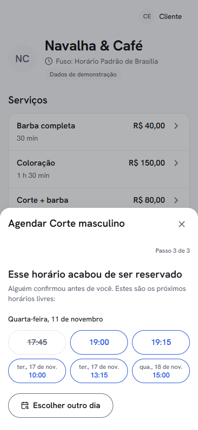

Cada garantia, com o teste que a prova.
Sou desenvolvedor full-stack júnior em Curitiba e região: APIs em Node.js e TypeScript, interfaces em React e apps em React Native. Quatro projetos, cada decisão registrada.
Pontual: 20 pedidos para o mesmo horário. O banco aceita um e recusa dezenove, em todas as 10 rodadas do teste.
